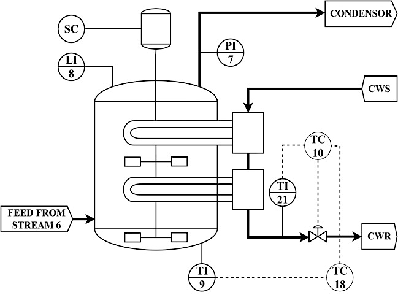
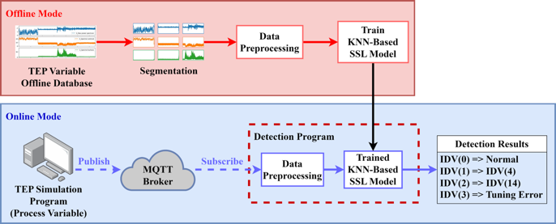
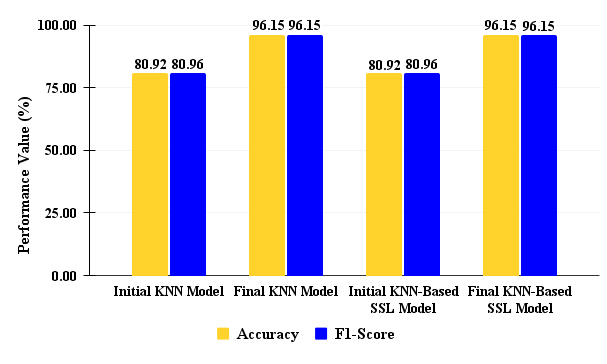

Source: https://www.powermag.com/troubleshooting-and-solving-poor-control-loop-performance
Oscillations in the control loops indicate the poor performance of the control loops. The occurrence of oscillations in the process control loop is quite high in the industry, so it needs to be reduced so that the control loop can work properly. The first step for oscillation reduction is oscillation detection. One type of oscillation that is difficult to detect is intermittent oscillation. The smart factory concept encourages the development of the intermittent oscillation detection system using machine learning by being implemented online. Therefore, in this study an online intermittent oscillation detection program is built using K-nearest neighbor (KNN)-based Semi-supervised learning (SSL) method.
The data used in this study are time series data of output variables which are the results of the TEP program simulation for 12 hours with a total of 52 variables consisting of 11 manipulated variables and 41 measured variables. The TEP program is an overall chemical plant dynamics first proposed by [Down and Vogel]. To optimize the results obtained, this study will focus on the processes that occur in the reactor. The reactor used in TEP is an exothermic type. This reactor produces heat, requiring cooling water to maintain the reactor temperature. The control structure of the TEP reactor is shown in Figure 1.
Figure 1. Process and Instrumentation Diagram (P&ID) reactor of Tennessee Eastman process where CWS/R is cooling water water steam/return, SC is speed stirred control, TC is temperature control, TI/PI/LI are temperature/pressure/level indicators.
This study proposes an intermittent oscillation detection model to classify the cause of oscillation in the Tennessee Eastman process (TEP) shown in Figure 2. The stages in this study are data collection, data preprocessing, design of detection model using SSL KNN-based offline, model implementation online, and model performance evaluation.
Figure 2. The proposed intermittent oscillation detection model
The research that has been conducted has the main objective of building a KNN-based SSL model in an intermittent oscillation detection program that can work online and in real time. The online periodic oscillation detection program that has been created is influenced by several factors, namely the window size selection and hyperparameter values. Based on offline testing and validation results, the KNN-based SSL model has the best performance results with a data window size of 100, the number of nearest neighbours or k value of 5 and using the Manhattan distance equation as it is suitable for high dimensionality in the data used.. The model performs well in classifying the oscillation type from various causes with an accuracy value and F1-score of 96.15% and 96.15%.
Figure 3. Comparison of the initial model with the final model.
The result for online detection of intermittent oscillations for test 1 and test 2
Missing value phenomenon is a phenomenon that commonly occurs in data groups organized by time. As a result of this phenomenon, the data group obtained will be incomplete. Missing value phenomenon is a phenomenon that commonly occurs in data groups arranged by time. Many data group analysis methods conducted by industries and companies require the missing values in these data groups to be replaced with accountable values so that the analysis results obtained can be better. Among the methods to replace these missing values is imputation. Imputation is a method to estimate the missing values in a data group by obtaining an overall pattern in the data group.
Time series data can be imputed using several algorithms. One type of algorithm is the nearest neighbor imputation method. The nearest neighbour method works by mapping the range of data to be imputed into points in an n-dimension. These points are a distance from each other. The nearest neighbor method will choose a certain distance from the missing data to be imputed so that the data available at that distance will affect the prediction of the missing data.
After the data group is complete, the next step can be done by modeling a system that can predict the future values of the complete data group. Predicting the future value of a data group can certainly give an idea of the condition of a system or a business. For example, for a group of data sourced from sensor data recordings, predicting the value of data recordings can describe the future condition of the plant recorded by the sensor, for a group of data sourced from company sales data, predicting the future value of sales will describe the future sales trend of the company and the level of profitability of the company.
The dataset used by our group is data from wireless sensor network recordings on the Induced Draft Fan System (IDF) obtained from Practical Work at the Indonesia Power Company in 2021. The dataset has 18 attributes. The attribute that will be the focus for prediction is CapacityGenerator. This data is strictly confidential so it is not published.
If you want to look detail this project. You can open my Github.
created with
Website Builder .